Para macOS
Claude Pet
Una mascota para cada herramienta.
Claude Code y Codex, cada uno con la suya. Aparecen cuando los usas.
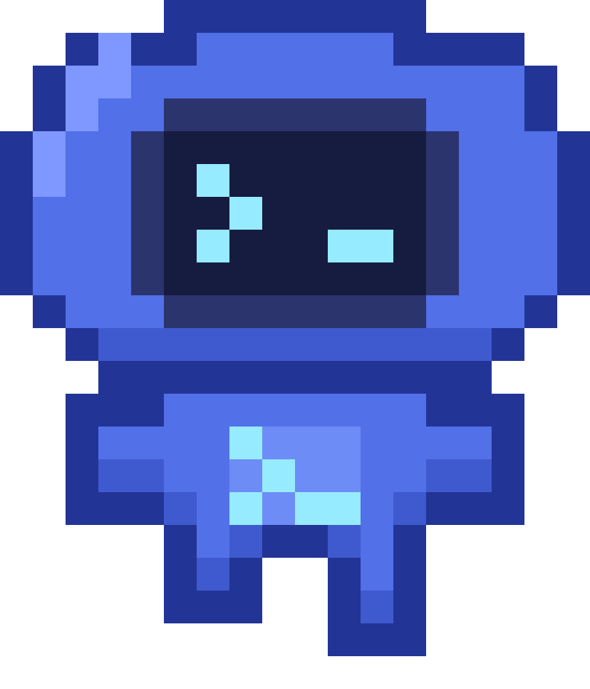
_ en su visor" width="864" height="1008">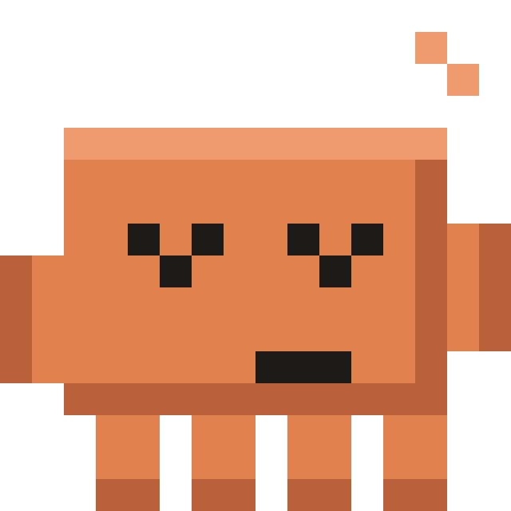
Una por herramienta.
Cada mascota aparece solo cuando usas la suya. Si usas las dos, salen las dos.
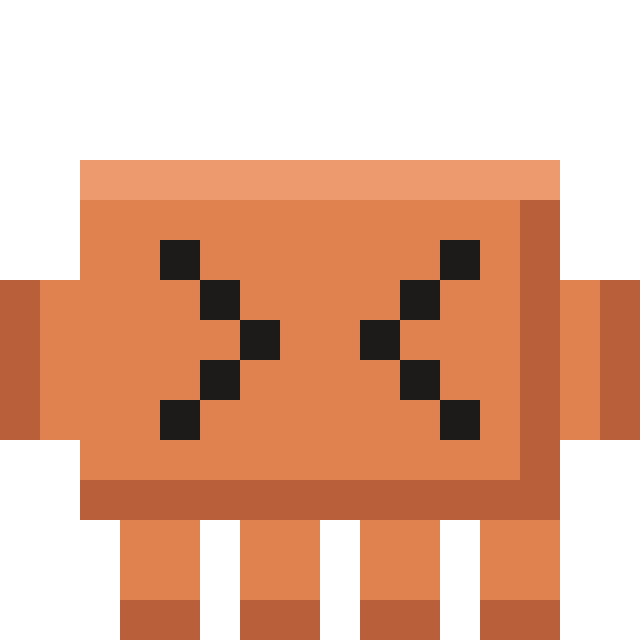
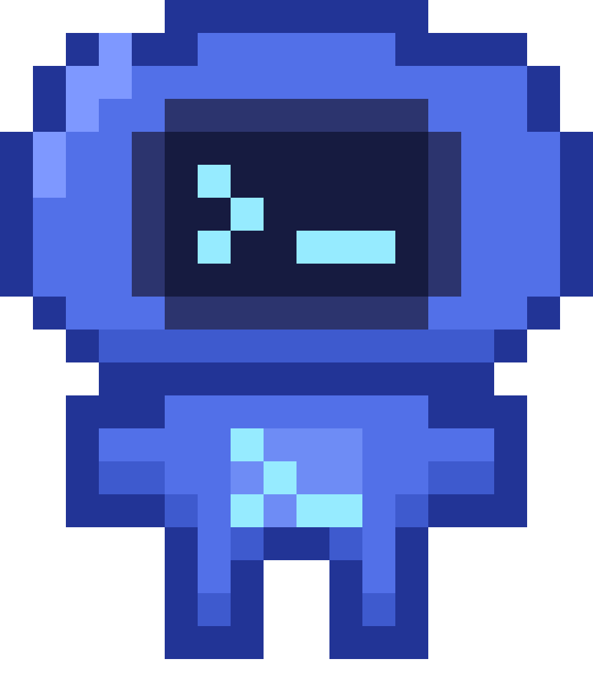
Separadas de verdad.
Arrastra cada una por su cuenta, a cualquier parte de la pantalla. Recuerdan dónde las dejaste.
Un clic sobre cada mascota abre su app.
Siete estados.
Un vistazo.
Lo que hace Claude Code, sin abrir la terminal.
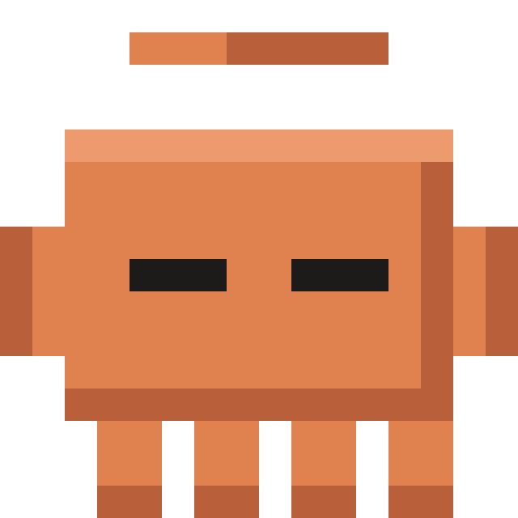
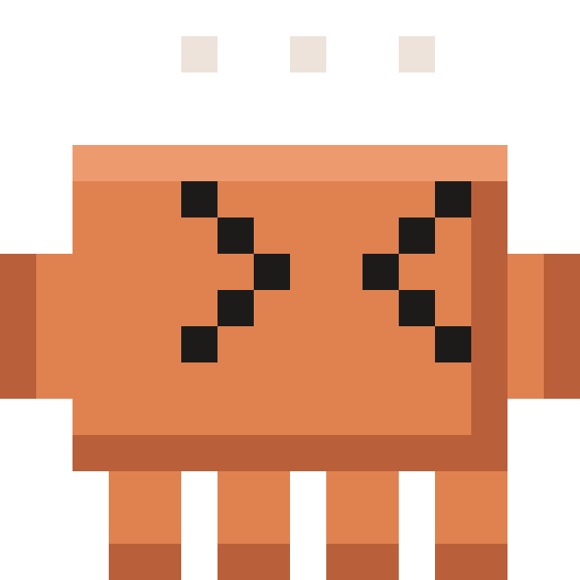
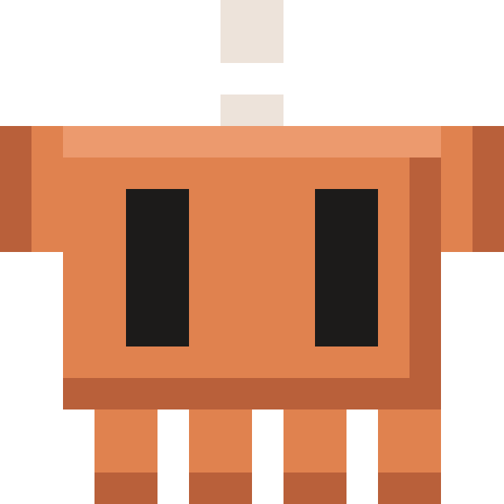
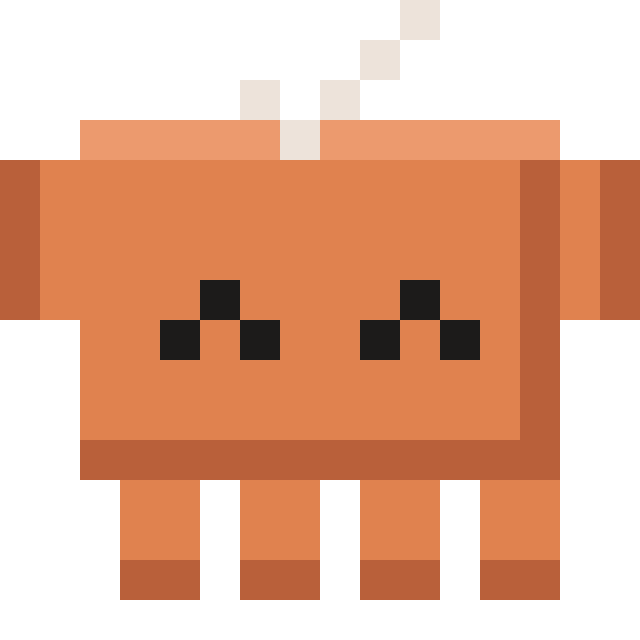
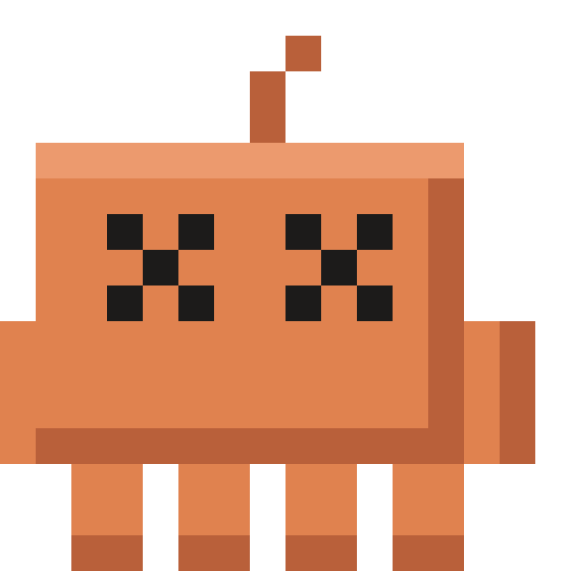
El visor de Codex
habla.
Puntos al pensar, un cursor que teclea, un signo de exclamación naranja cuando pide permiso.
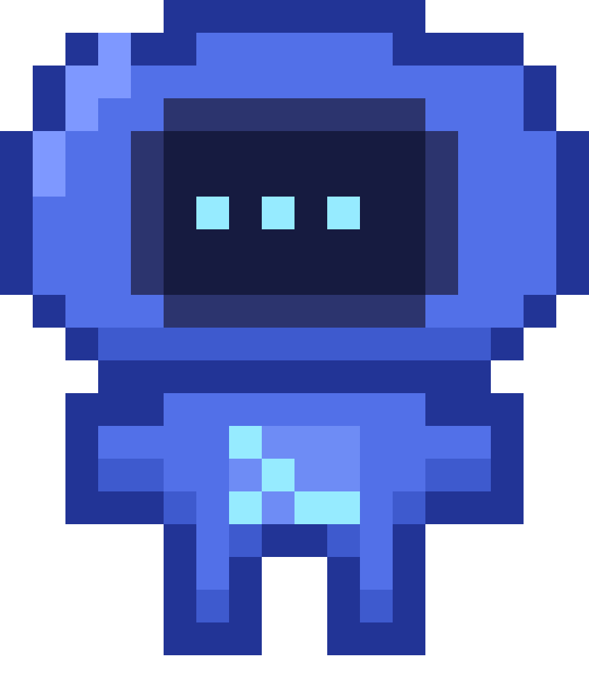
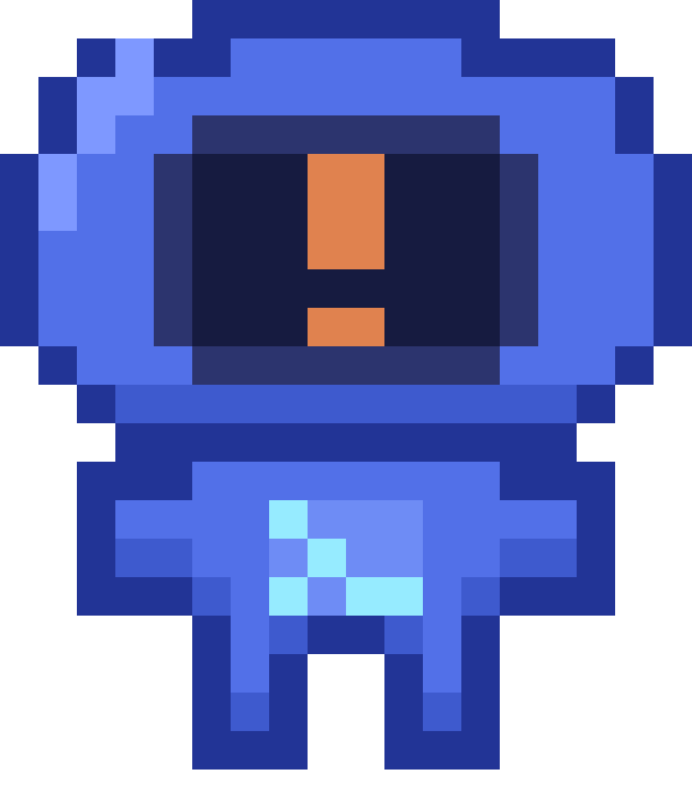
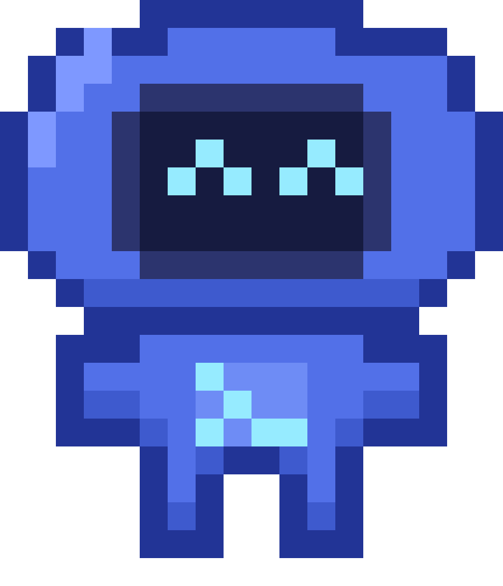
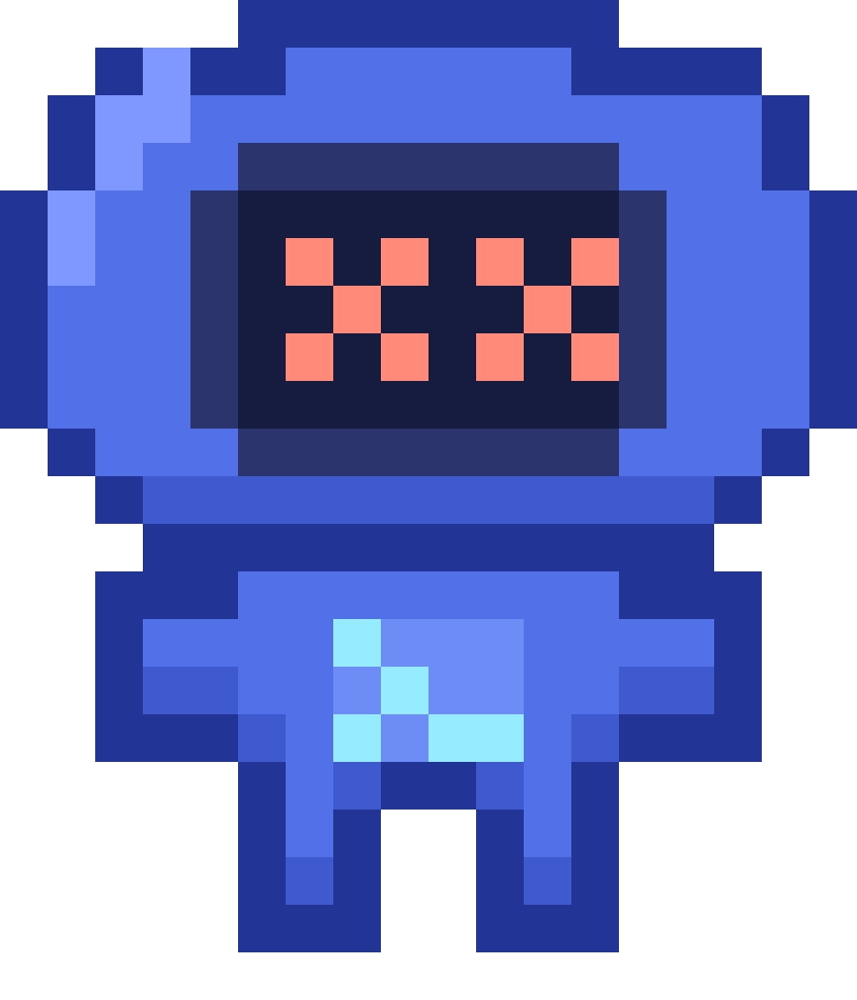
La tarea exacta.
No “pensando”. “Editando PetStore.swift”.
Todo se queda
en tu Mac.
Sockets Unix locales. Sin red, sin credenciales, sin telemetría.
Se miran.
Mientras Claude piensa, Codex lo observa. Y Claude mira hacia Codex cuando este trabaja.
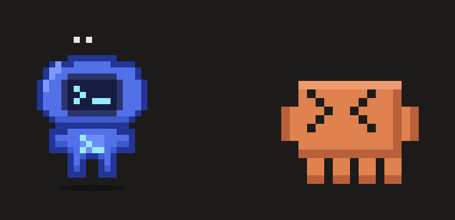
Se aplauden.
Cuando uno termina, el otro pone cara feliz, un check y salta.
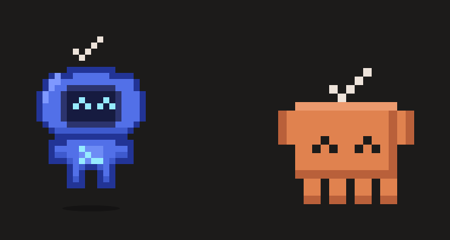
Y juegan al fútbol,
estén donde estén.
Si se ven las dos, están cerca y llevan unos segundos sin trabajar, Codex le pasa la pelota a Claude. Ninguna ventana se mueve.
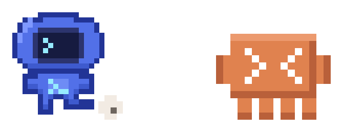
Mission control.
Un tablero en la barra de menú. Todo local.
Radar de colisión
Avisa si Claude y Codex trabajan en el mismo proyecto.
Pulso git
Cambios, staged, archivos nuevos y conflictos. Sin leer su contenido.
Línea de tiempo
Los últimos cambios de estado de ambos, con su hora.
Presupuesto de atención
Cuánto dura la sesión y cuántas herramientas usó.
Cápsula de recuperación
Tras un error, el estado git y el diff a un clic.
Hecho para pasar desapercibido.
Instálalo en un minuto.
Muestra el cambio exacto antes de tocar tu configuración.
Codex se conecta por el pet bus. Protocolo y cliente de referencia en el repositorio.
# compila la app ./build.sh open build/ClaudePet.app # revisa el diff y aplícalo con tu confirmación ./install-hooks.sh --dry-run ./install-hooks.sh